线程管理
自从60年代以来提出进程概念以来，在操作系统中一直都是以进程作为独立运行的基本单位，直到80年代中期，人们又提出了更小的能独立运行的基本单位——线程。
- 为什么使用线程？
[案例] 编写一个MP3播放软件。
核心功能模块有三个：
(1) 从MP3音频文件当中读取数据；
(2) 对数据进行解压缩；
(3) 把解压缩后的音频数据播放出来。
单进程
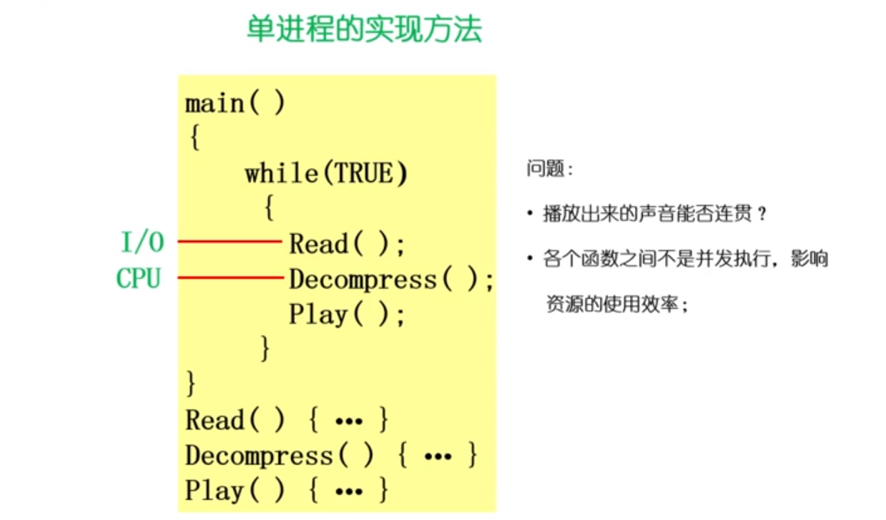
多进程
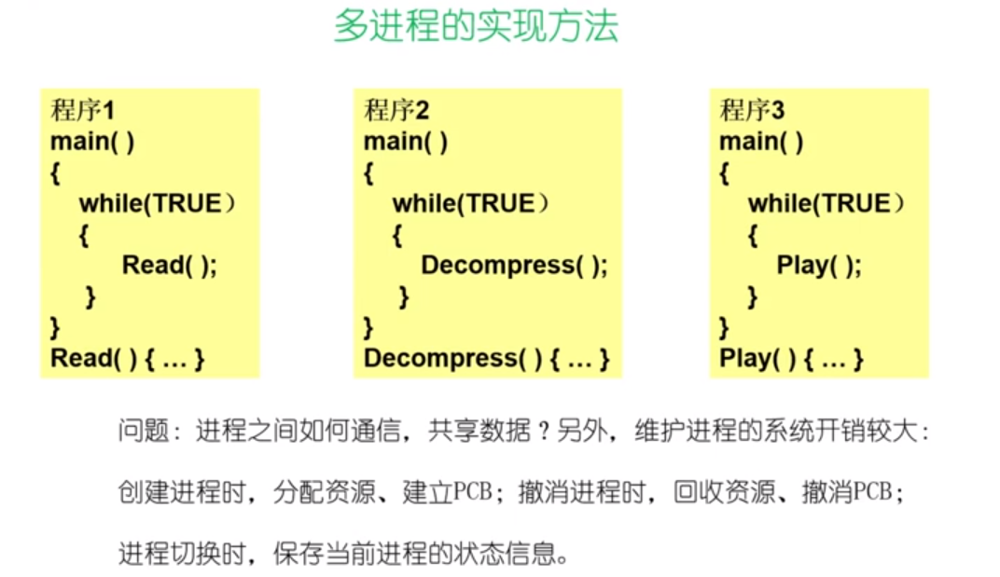
怎么解决这些问题？
需要提出一种新的实体，满足一下特性：
(1) 实体之间可以并发地执行；
(2) 实体之间共享相同的地址空间；
这种实体就是： 线程（Thread）
- 什么是线程
Thread：进程当中的一条执行流程。
从两个方面来重新理解进程
从资源组合的角度：进程把一组相关的资源组合起来，构成了一个资源平台(环境)，包括地址空间（代码段、数据段）、打开的文件等各种资源；
从运行的角度：代码在这个资源平台上的一条执行流程（线程）
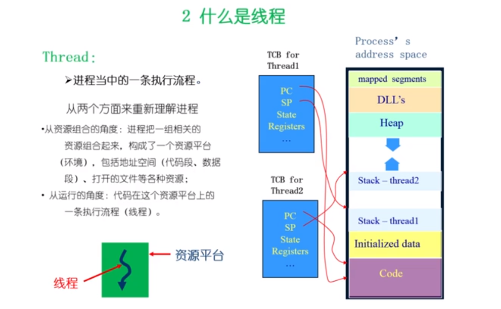
线程 = 进程 - 共享资源
线程的优点：
一个进程中可以同时存在多个线程；
各个线程之间可以并发地执行；
各个线程之间可以共享地址空间和文件等资源
线程的缺点：
一个线程崩溃，会导致其所属进程的所有线程崩溃。
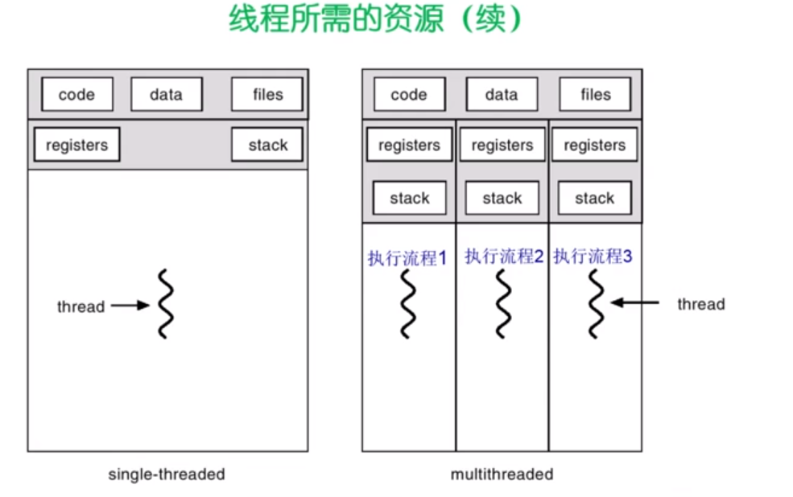
线程和进程的比较：
进程是资源分配的单位，线程是CPU调度单位；
进程拥有一个完整的资源平台，而线程只独享必不可少的资源，如寄存器和栈；
线程同样具有就绪、阻塞、执行三种基本状态，同样具有状态之间的转换关系；
线程能减少并发执行的时间和空间开销：
—— 线程的创建时间比进程短
—— 线程的终止时间比进程短
—— 同一进程内的线程切换时间比进程短
—— 由于同一进程的各线程间共享内存和文件资源，可直接进行不通过内核的通信；
- 线程的实现
主要有三种线程的实现方式：
用户线程：在用户空间实现
POSIX Pthreads， Mach C-threads， Solaris threads
操作系统看不到，由用户应用态的用户线程库来实现和管理
内核线程：在内核中实现
Windows ， Solaris ， Linux
由操作系统来管理
用户线程与内核线程的对应关系
多对一
一对一
多对多
用户线程
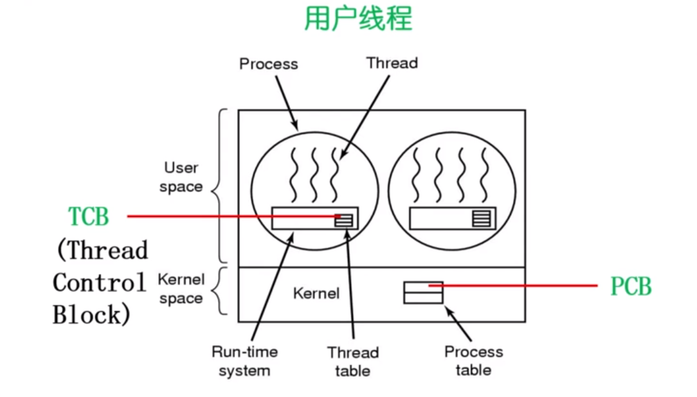
在用户空间实现的线程机制，它不依赖于操作系统的内核，由一组用户级的线程库函数来完成线程的管理，包括线程的创建、终止、同步和调度等。
- 由于用户线程的维护由相应进程来完成（通过线程库函数），不需要操作系统内核了解用户线程的存在，可用于不支持线程技术的多进程操作系统；
- 每个进程都需要它自己私有的线程控制块（TCB）列表，用来跟踪记录它的各个线程的状态信息（PC、栈指针、寄存器），TCB由线程库函数来完成；
- 用户线程的切换也是由线程库函数来完成、无需用户态/核心态切换，所以速度特别快；
- 允许每个进程拥有自定义的线程调度算法。
用户线程的缺点：
- 阻塞性的系统调用如何实现？如果一个线程发起系统调用而阻塞，则整个进程在等待；
- 当一个线程开始运行后，除非它主动地交出CPU的使用权，否则它所在的进程当中的其他线程将无法运行；
- 由于时间片分配给进程，故与其他进程比，在多线程执行时，每个线程得到的时间片较少，执行会慢。
内核线程
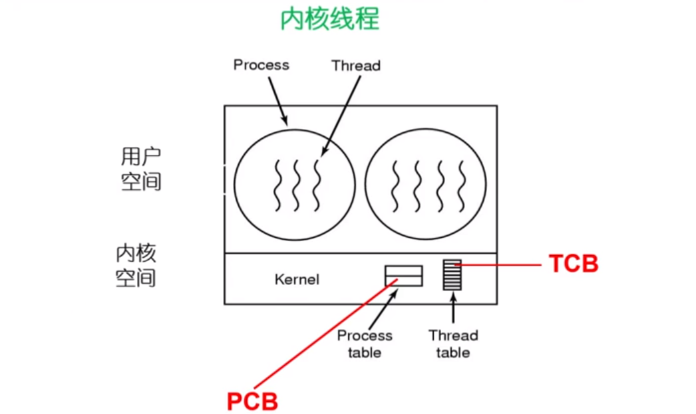
是指在操作系统的内核当中实现的一种线程机制，由操作系统的内核来完成线程的创建、终止和管理。
- 在支持内核线程的操作系统中，由内核来维护进程和线程的上下文信息（PCB和TCB）；
- 线程的创建、终止和切换都是通过系统调用/内核函数的方式来进行的，由内核来完成，因此系统开销较大；
- 在一个进程当中，如果某个内核线程发起系统调用而被阻塞，并不会影响其他内核线程的运行；
- 时间片分配给线程，多线程的进程获得更多的CPU时间；
- Windows NT 和 Windows 2000/XP 支持内核线程。
轻量级进程：在内核中实现，支持用户线程
Solaris （LightWeight Process）
它是内核支持的用户线程。一个进程可有一个或多个轻量级进程，每个量级进程由一个单独的内核线程来支持。（Solaris、Linux）
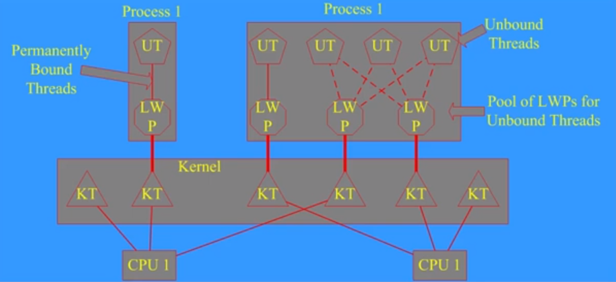
- 多线程编程接口举例
上下文切换（context switch）
停止当前运行进程（从运行状态改变为其他状态）并且调度其他进程（转变为运行状态）
- 必须在切换之前存储许多部分的进程上下文
- 必须能够在之后恢复他们，所以进程不能显示它曾经被暂停过
- 必须快速（上下文转换是非常频繁的）
需要存储什么上下文？
- 寄存器（PC、SP、….），CPU状态，…
- 一些时候可能会费时，所以我们应该尽可能避免
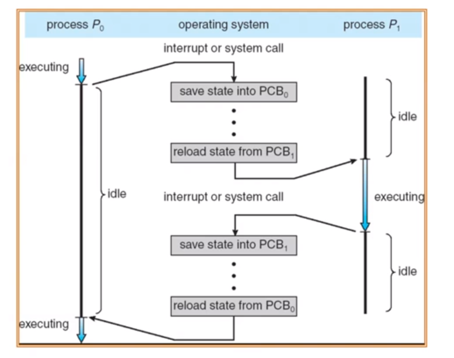
操作系统为活跃进程准备了进程控制块（PCB）
操作系统将进程控制块（PCB）放置在一个合适的队列里
- 就绪队列
- 等待I/O队列（每个设备的队列）
- 僵尸队列
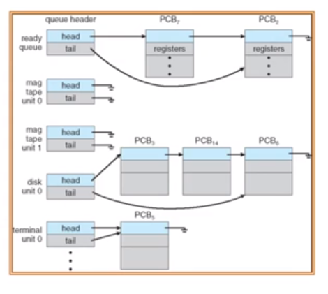
进程控制——创建进程
进程控制——加载和执行进程
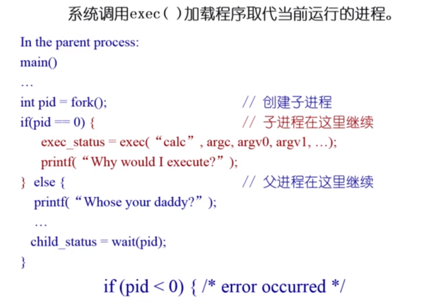
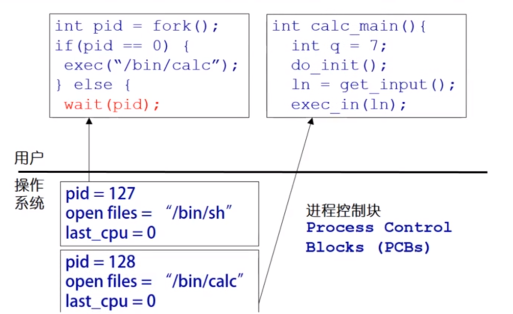
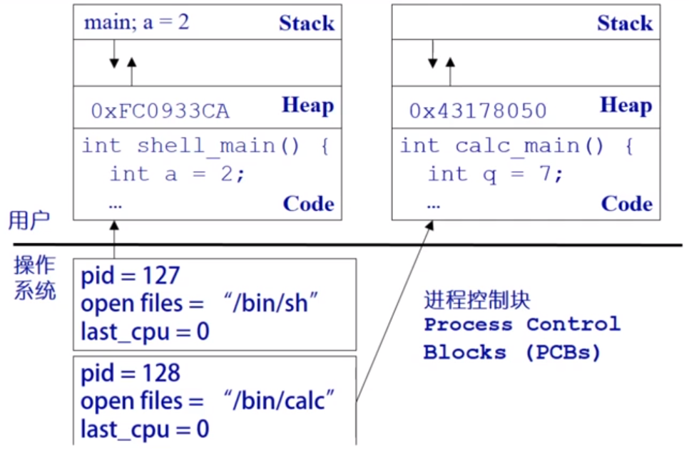
Exec（）调用允许一个进程“加载”一个不同的程序并且在main开始执行（事实上_start）
它允许一个进程指定参数的数量（argc）和它字符串参数数组（argv）
如果调用成功
- 它是相同的进程
- 但是它运行了不同的程序
代码，stack（栈） & heap（堆）重写
fork（）的简单实现
对子进程分配内存
复制父进程的内存和CPU寄存器到子进程里
开销昂贵
99%的情况里，我们在fork（）之后调用exec（）
在fork（）操作中内存复制是没有作用的
子进程将可能关闭打开的文件和连接
开销因此是高的
为什么不能结合它们在一个调用中（OS/2 ，Windows）？
vfork（）
一个创建进程的系统调用，不需要创建一个同样的内存映像
一些时候成为轻量级fork（）
子进程应该几乎立即调用exec（）
现在不再使用如果我们使用Copy on Write（COW）技术
wait（）系统调用是被父进程用来等待子进程的结束
一个子进程向父进程返回一个值，所以父进程必须接受这个值处理
wait（）系统和调用担任这个要求
- 它使父进程去睡眠来等待子进程的结束
当一个子进程调用exit（）的时候，操作系统解锁父进程，并且将通过exit（）传递得到的返回值作为wait调用的一个结果（连同子进程的pid一起）如果这里没有子进程存活，wait（）立即返回
当然，如果这里有为父进程的僵尸等待，wait（）立即返回其中一个值（并且解锁僵尸状态）
进程结束之后，它调用exit（）
这个系统调用：
将这程序的“结果”作为一个参数
关闭所有打开的文件，连接等等
释放内存
释放大部分支持进程的操作系统结构
检查是否父进程是存活着的
- 如果是的话，它保留结果的值直到父进程需要它，在这种情况下，进程没有真正死亡，但是它们进入僵尸（zimbie/defunct）状态
- 如果没有，它释放所有的数据结构，这个进程死亡
清理所有等待的僵尸进程
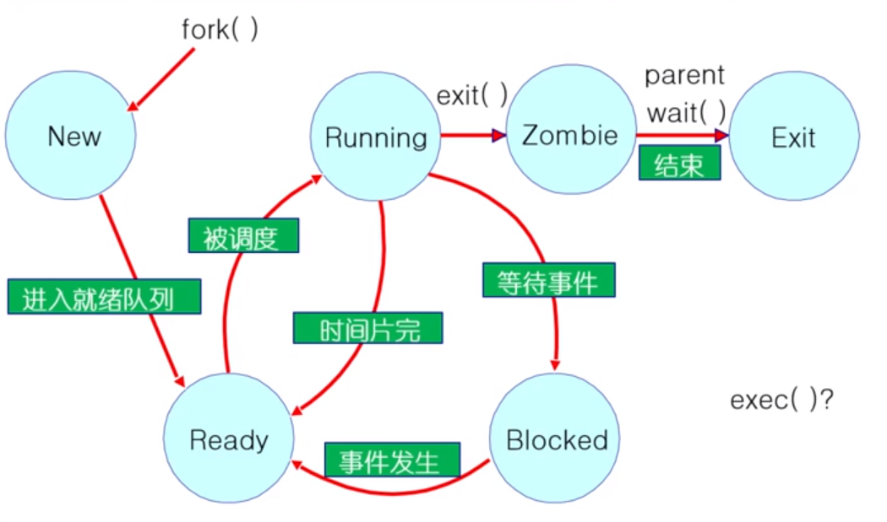